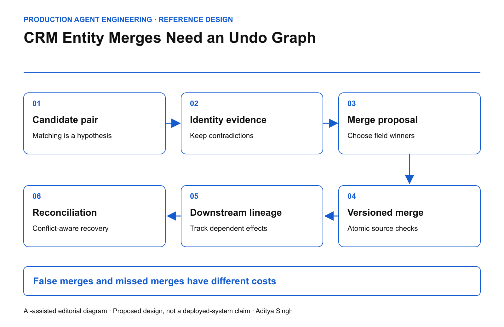

EDITORIAL REVIEW ONLY · Not published or scheduled on Medium or LinkedIn
CRM Entity Merges Need an Undo Graph
Why deduplicating customer records is a lineage operation with a recovery contract.
This story was developed with AI writing and diagram assistance. Examples and numbers are illustrative; no customer records or production results are represented.
Two accounts share a name and an address. An agent merges them. One record belonged to a parent company; the other represented a separately contracted subsidiary. Pipeline ownership, renewal history and an open invoice now appear under the wrong commercial identity.
A high similarity score did not establish that these were the same business entity. More importantly, “undo merge” is no longer one database operation after downstream systems consume the new identifier.
Separate matching from consolidation
Matching generates a hypothesis: records A and B represent the same entity for a declared purpose. Consolidation chooses a survivor and rewrites references. Keep those as separate permissions.
Define the entity type before evaluating similarity. A legal entity, billing account, household and sales territory are different concepts. Two records can be equivalent for one analytical report and still be unsafe to merge operationally.

AI-assisted reference diagram. The merge plan preserves the lineage needed to explain and, where feasible, compensate downstream changes.
The proposal should show identity evidence, contradictory evidence, affected objects, proposed field winners and the systems that will receive the change. A missing identifier is not positive matching evidence.
Price the asymmetry
Let p be the calibrated probability that a candidate pair represents the same entity. Let C_false be the cost of a false merge and C_missed the cost of leaving a true duplicate unresolved. Ignoring review costs and other options, merging has lower expected loss when:
(1 - p) × C_false < p × C_missed
p > C_false / (C_false + C_missed)
For illustrative costs of $50,000 and $200, that threshold is approximately 99.602%. It is not a recommended universal confidence cutoff. The model assumes calibrated probabilities and simplified losses; a similarity score is not automatically p.
Manual review creates another option with its own cost, delay and error rate. Sensitive account classes may require review regardless of the numerical threshold.
Commit an explicit merge plan
Use immutable source identifiers, a merge action ID, expected source versions and a pre-merge snapshot protected by the normal data-access rules. Preserve aliases so downstream references can resolve deliberately rather than silently attaching to the wrong customer.
merge_plan:
action_id: merge-demo-42
sources: [account-A@v12, account-B@v8]
survivor: account-A
field_resolution: approved-explicit-map
reparenting: approved-object-reference-list
downstream_consumers: [billing, support, analytics]
recovery_owner: assigned-human-role
This is a planning contract, not a platform API. A real implementation must also handle record locks, tenancy, permissions and fields that are prohibited from consolidation.
Foreign-key constraints can preserve structural referential integrity, but they do not prove that the selected survivor is commercially correct. See PostgreSQL's constraint documentation. Business equivalence remains an application decision.
The recovery graph grows after commit
Suppose billing creates a new invoice after the merge, support reassigns two cases and analytics updates a forecast. Recreating the original two rows does not reverse these consequences.
Record a dependency graph from the merge to each downstream effect. Classify edges as automatically compensatable, human-reconcilable or irreversible. A sent customer message belongs in the last category even if the CRM row can be restored.
The recovery operator should see affected objects and a proposed compensation order. Concurrent legitimate edits must not be overwritten with an old snapshot. Compare current versions and route conflicts to the responsible owner.
Test the graph before trusting the score
| Scenario |
Required behavior |
| Parent and subsidiary share an address |
Preserve legal-entity distinction |
| One source changes during review |
Invalidate or recompute merge plan |
| Consumer receives the event twice |
No repeated reparenting effect |
| Billing is unavailable |
Visible pending downstream state |
| Unmerge occurs after new invoice |
Explicit reconciliation, not blind restoration |
Track precision on reviewed merge samples, unresolved identity conflicts, downstream reconciliation age and the proportion of merges with complete lineage. Do not optimize duplicate-count reduction without checking false merges.
The transactional outbox pattern can help coordinate a database change with notification of consumers. Consumers still need duplicate handling; an outbox does not make a multi-system merge automatically reversible.
Start with propose-only matching on one low-risk entity class. Expand authority only after the team has demonstrated recovery on intentionally wrong synthetic merges. The meaningful readiness test is whether a false merge remains explainable and containable after downstream systems have acted.